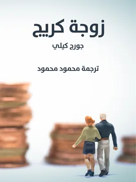

زوجة كريج

قراءة عربية أصلية محددة النطاق في الصفحات 9 إلى 14 من ملف PDF المرتبط، وليست تلخيصا كاملا للكتاب. نناقش ما تدعمه هذه المقاطع فقط.
ثلاثة أوجه للمرأة الحرة: من لوسي إلى زوجة كريج
يفتتح المقدم للمسرحية كلامه بسؤال: أليس معنى الزواج أن تصبح حياة المرأة موقوفة على الزوج؟ والزواج معناه أنها أعطت أعز ما تملك لأعز من تحب؛ وأعز ما تملكه المرأة هو جسمها فهو مملكتها. وعندما يسألها الزوج: أريد أن أعرف من أنت؟ تقول: أنا عمري، أنا شبابي، أنا عشرون ربيعًا. هذه الزوجة تريد من زوجها أن يقوم بدور شهرزاد: كل ليلة ليلة جديدة وقصة جديدة ومغامرة جديدة؛ فإذا انتهت الحكايات اتجهت إلى مؤلف آخر؛ فالحب في قلبها طفل صغير تهدهده الحكايات فينام. وعندما اتجهت الزوجة إلى مؤلف آخر كان أخا زوجها: تعبت من حكايات الأخ الأكبر فاتجهت إلى الأصغر، ثم تعبت من الأصغر فخرجت من البيت خروج الفاتحين وتحت قدميها دماء زوجها وأخيه. هذا الوجه أبدعه أرمان سالكرو في مسرحية «امرأة حرة»: لوسي التي لم تكن صاحبة مبدأ أو فلسفة، وإنما تريد أن تعيش حياتها هي غير مشروطة، ولا يهمها ماذا يقول عنها المؤرخون؛ إنها تمر بالتجربة وعليهم أن يختاروا لتجاربها الأسماء. والوجه الثالث نجده في هذه المسرحية «زوجة كريج» التي تدور حوادثها في بضع ساعات، ويبدو أن المؤلف تعمد الإطالة.
زاوية وحدود القراءة
قراءة موجزة من ص ٩ إلى ص ١٤ من أصل ١٢٠ صفحة، تعرض تقديم الكتاب، لا الكتاب كاملًا.
الطبعة والقراءة
هذه النسخة من الكتاب صادرة ومتاحة مجانًا بموجب اتفاق قانوني بين مؤسسة هنداوي وأسرة السيد الأستاذ محمود محمود.
تنزيل PDF المجاني ↓ القراءة والمصدر الرسمي ↗